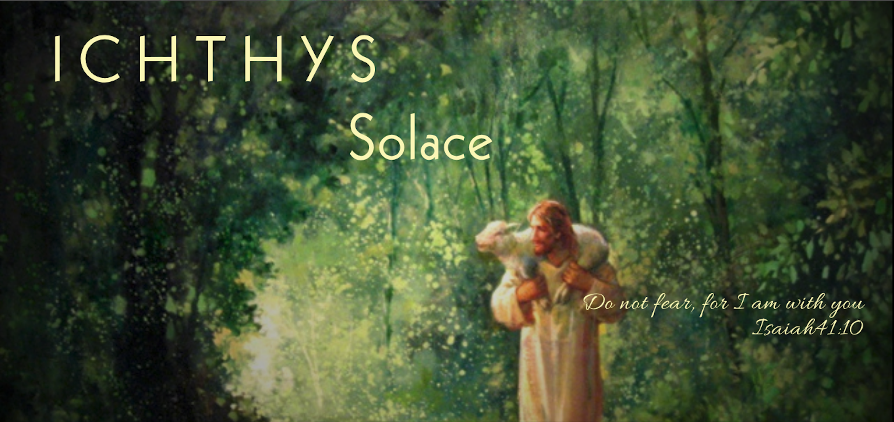

1박 2일간의 집중 회복 과정으로 소진된 선교사들이 다시 숨을 고르고 재파송될 수 있도록 돕습니다.
본국으로 돌아가 사역하는 현지인 리더를 지원하고, 선교지 교회 세우기와 목회자 가정 회복을 함께합니다.
한국에 거주하는 이주민과 외국인 노동자들이 복음을 만나 새 삶을 살아가도록 함께합니다.
FROM REST TO RECOMMISSION · FROM HEALING TO MISSION
선교사와 사역을 위한 중보기도에 함께해 주세요.
작은 헌신이 상처 입은 영혼들에게 큰 위로가 됩니다.
전 세계 선교지의 생생한 현장 소식을 받아보세요.